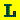

Line View pane (blind)
The Line View pane is a table that presents the problems for the selected categories line by line.
Provided information
For each problem, the following information is given:
- Type (Icon): a visual indicator for the problem. The icons used in the Line View pane in the blind mode are as follows:
 : This icon appears with some other icon. The corresponding element can be highlighted in the Visualization View by selecting this line.
: This icon appears with some other icon. The corresponding element can be highlighted in the Visualization View by selecting this line.
-
- : This is a compliance problem automatically detected by the checker.
- : This may be a compliance problem. The user must manually check it.
- : This is
an informational item.
-
- : This is an
usability (listenability) problem automatically detected by the checker.
- : This
may be an usability (listenability) problem. The user must manually check it.
- : This is
an informational item.
-
- : This is an
usability (navigation) problem automatically detected by the checker.
- : This
may be an usability (navigation) problem. The user must manually check it.
- : This is
an informational item.
-
If the problem affects to the evaluation metrics, the score will be shown with the icon.
- Accessibility guidelines: The five accessibility guidelines and standards that are available for use appear to the right of the Icon column.
In the Guideline Checker preference page (opened by clicking Window > Preferences > ACTF > Guideline Checker),
the guidelines and standards can be selected for the tool to use when it checks the accessibility and usability of webpages.
- WCAG: The number of the corresponding checkpoint defined in the Web Content Accessibility Guidelines, which are issued by the World Wide Web Consortium.
- [Section] 508: The corresponding rule in Section 508 of the Rehabilitation Act §1194.22.
- JIS: The corresponding checkpoint of the Japanese Industrial Standard (JIS) X8341-3.
- IBM Web Accessibility Checklist: The number of the corresponding checkpoint of the IBM Web Accessibility Checklist.
- Line: The line number in the HTML document at which the problem appears.
This will appear when the Line number information option in the Guideline Checker preference page is selected.
- Problem Description: A description of the accessibility or usability problem that will prevent blind users from accessing the page.
Interaction
Left-click a line to highlight the element that corresponds to the problem in the Visualization View.
Right-click a line or press Shift+F10 to open a context menu.
- Clear Selection: Selecting this item clears (unselects) the currently selected problem (or problems) in the Line view.
This is used to stop highlighting problems in the Simulation/Visualization view.
- View Guideline: Selecting this item refers to the
corresponding help pages of the guideline items, which appear in a separate browser window. If there are no relevant checkpoints in any guideline, this item is not available.
- View Problem Description: Selecting this item opens a dialog box that shows the problem description for the selected problem.
This is useful when the problem description is too long to read in the Line View.
- View Source HTML: Selecting this item opens the HTML source viewer in which the corresponding HTML element is highlighted.
Go to Index